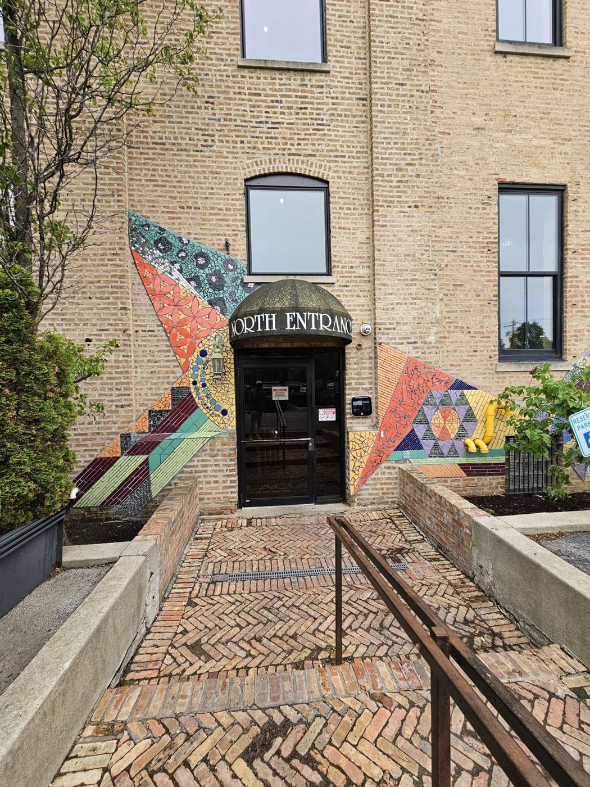
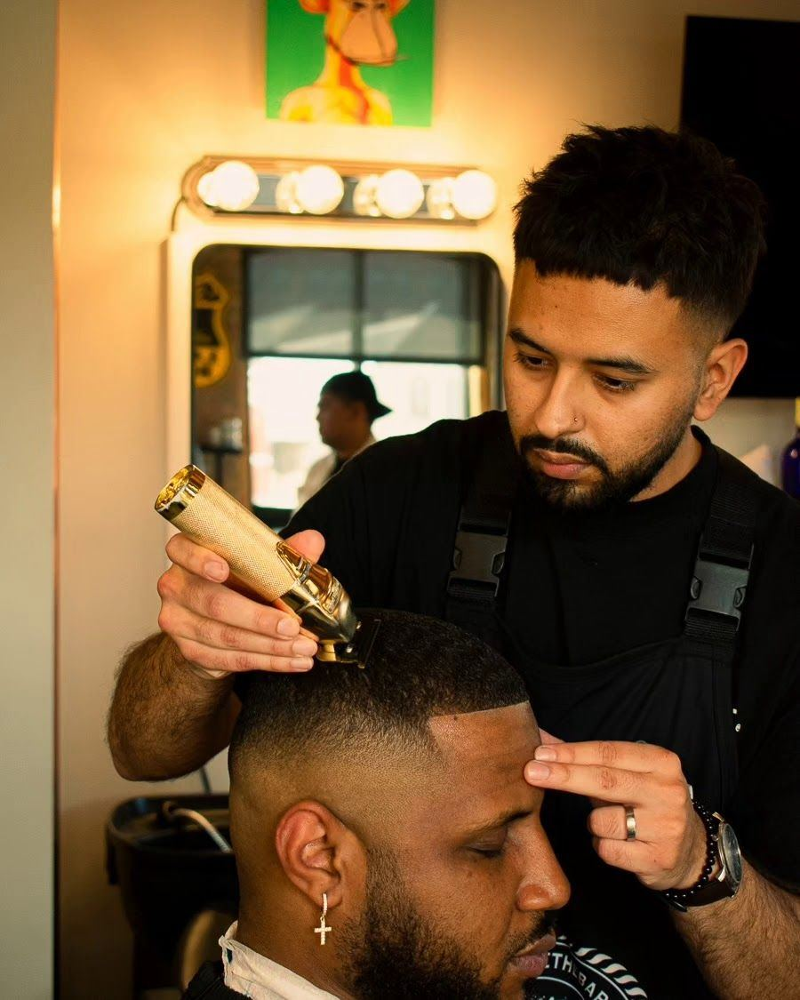
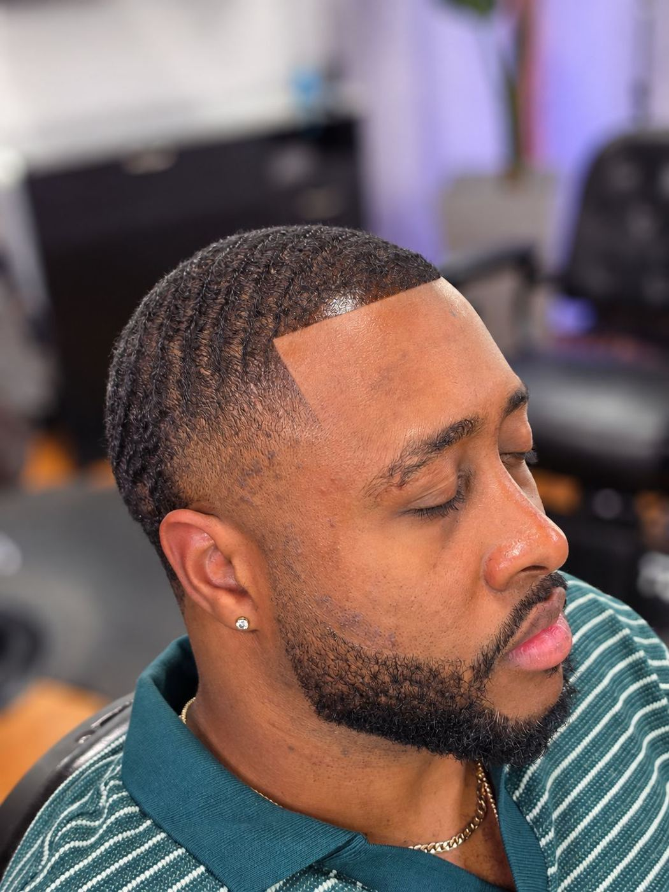
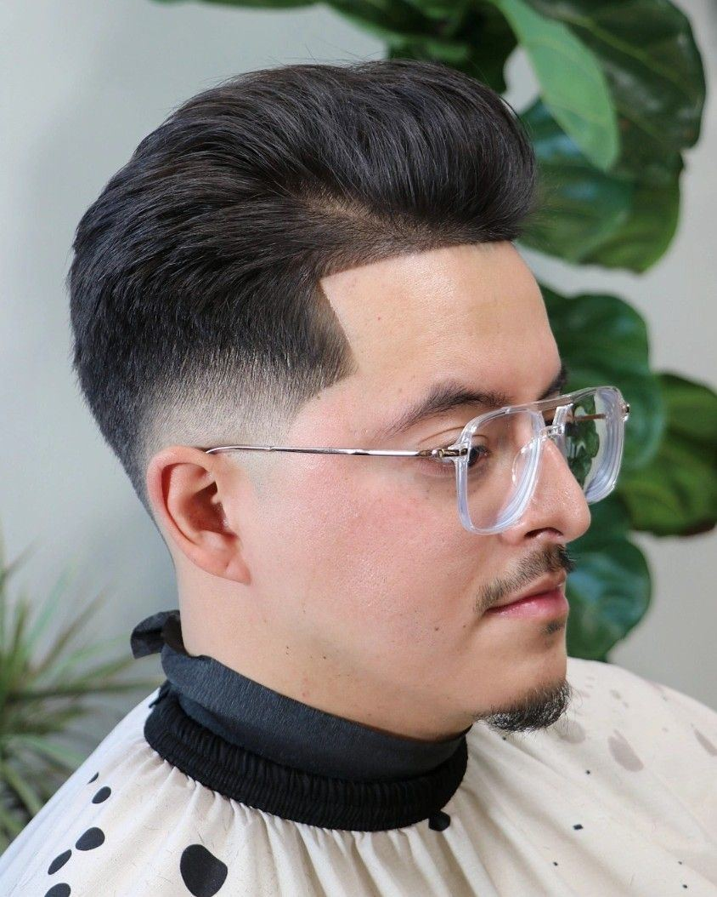
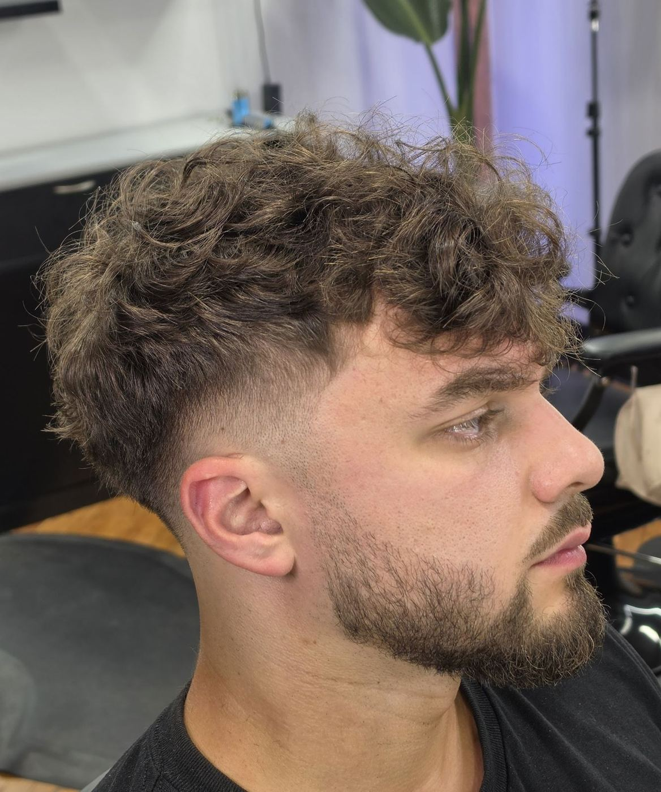
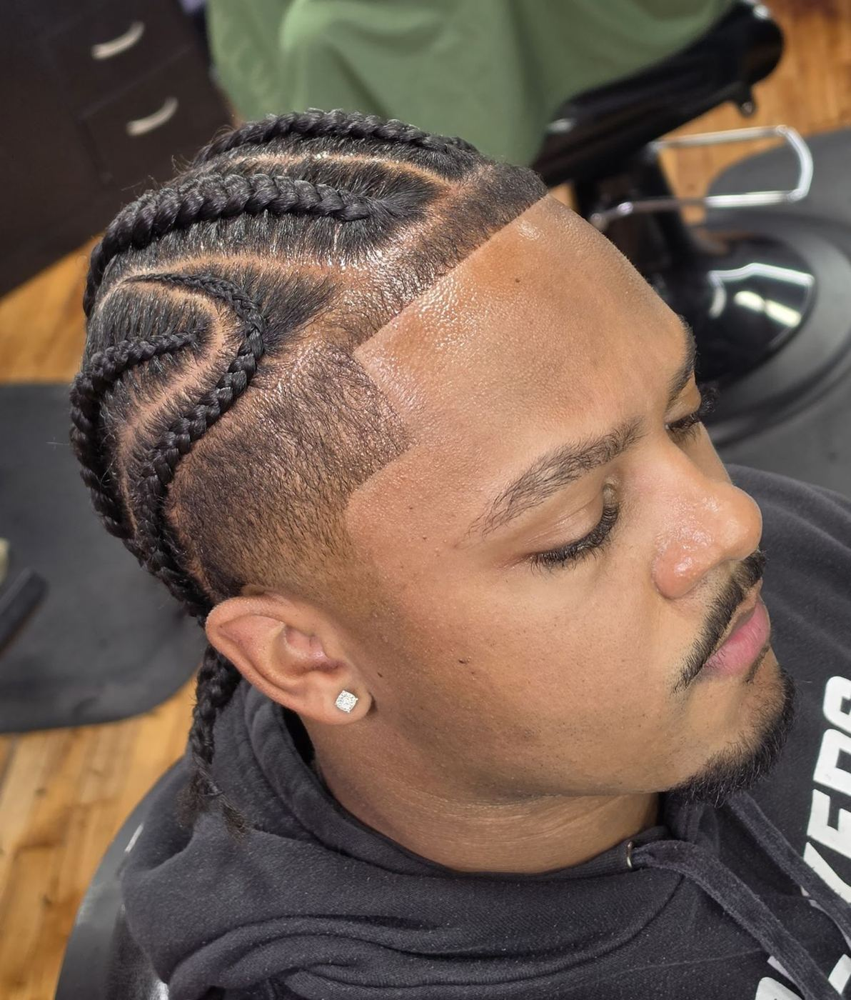
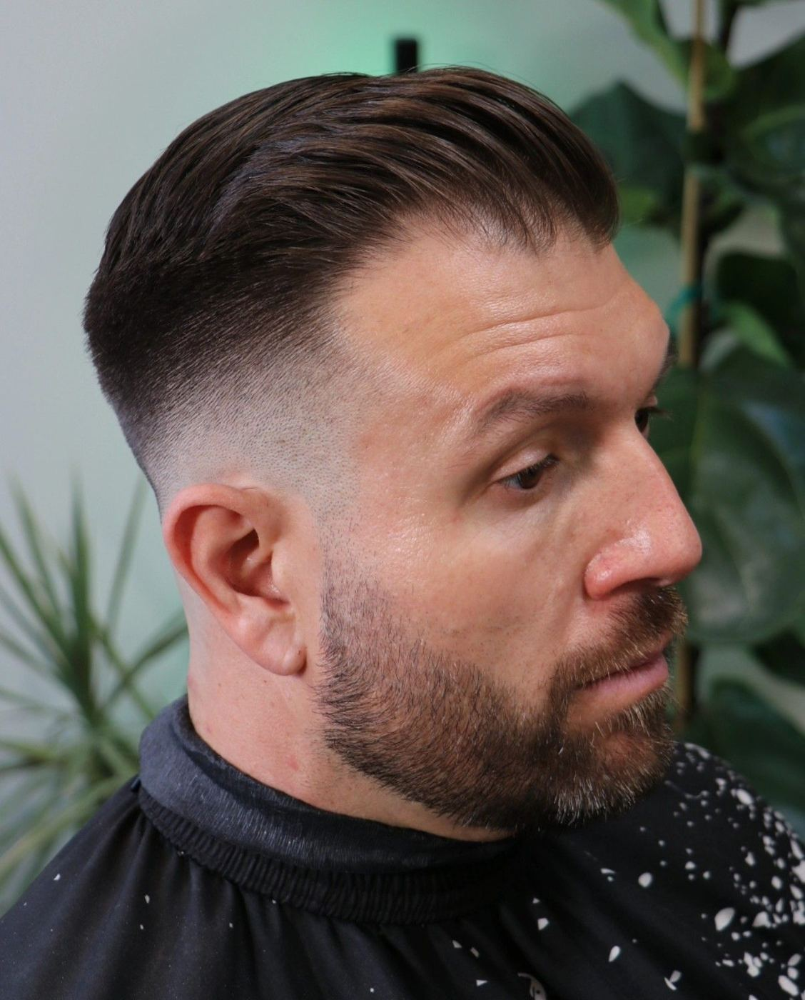
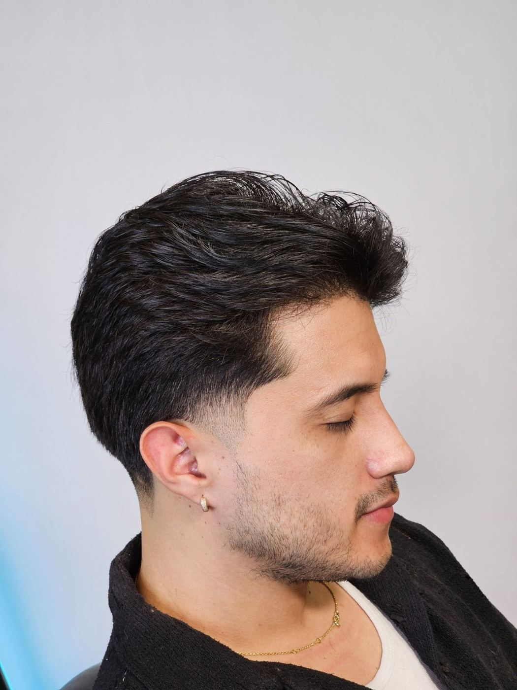

5.0★ on Google
25 reviews
“The amount of plants in the shop makes it feel like you’re getting a fade in a spa.”— Google review, Dec 2025
The lookbookSwipe →








In this issue
i.
Consistency. Clients of 2, 4 and 6 years say every cut lands the same.
ii.
Detail. “Ridiculous fades” and he never lets you leave until you’re satisfied.
iii.
The room. Plants, refreshments, talk or quiet time, your call.